Install Sample WebSphere Liberty Application
You will install an example application called libertydiag. Note that this link is just for reference as the application image will be pulled by OpenShift.
Choose to perform the installation either using the WebSphere Liberty Operator or a basic Kubernetes Deployment. If you're not sure, use the WebSphere Liberty Operator. The WebSphere Liberty Operator is essentially a wrapper around a basic Kubernetes Deployment with various additional features and conveniences. Some of the labs require the use of the WebSphere Liberty Operator, so if you choose a basic Kubernetes Deployment, you will need to uninstall and recreate a WebSphere Liberty Operator deployment for those labs or skip them. We encourage you to test both the WebSphere Liberty Operator and basic Kubernetes Deployments as both are commonly used in the field.
Choose to use either the command line or the browser. In general, we suggest using the command line. Knowing how to do the same in the browser is optional.
You may use the same installation for all of the WebSphere Liberty labs, except where otherwise indicated at the beginning of a lab; however, if you decide to do so, some of the labs end with pods in a bad state and you will need to destroy them which will be mentioned in the cleanup steps of such labs.
If you previously installed this application and you would like to try a different method, then first uninstall the sample application.
Install using the WebSphere Liberty Operator
Using the command line
- If you haven't already, download the
ocexecutable and log into your OpenShift console through the command line -
If you have been provided a namespace that you should use, then set your current namespace/project by replacing
$NAMESPACEin the following command:oc config set-context --current --namespace $NAMESPACE -
Create a file in your current directory named
libertydiag.yamland paste the following contents:apiVersion: liberty.websphere.ibm.com/v1 kind: WebSphereLibertyApplication metadata: name: libertydiag annotations: openliberty.io/day2operations: WebSphereLibertyTrace,WebSphereLibertyDump spec: license: accept: true edition: IBM WebSphere Application Server metric: Virtual Processor Core (VPC) productEntitlementSource: Standalone applicationImage: quay.io/ibm/libertydiag probes: readiness: initialDelaySeconds: 1 failureThreshold: 1 manageTLS: true expose: true pullPolicy: Always -
Deploy the YAML:
oc apply -f libertydiag.yaml -
Run the following command which will wait until the deployment is ready. This may take up to 2 minutes or more depending on available cluster resources and namespace limits:
oc wait deployment libertydiag --for condition=available --timeout=5m -
List the route's URL:
oc get route libertydiag "--output=jsonpath={'https://'}{.spec.host}{'/\n'}" -
Open the URL in your browser and accept the certificate warning
- You should see the
libertydiagapplication home page:
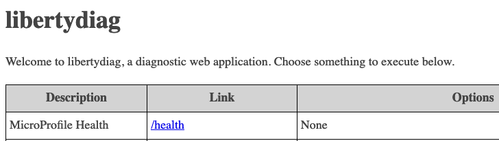 - Go back to the previous page in the lab and continue to the next step of the lab
Using the browser
- Access your OpenShift web console at
https://console-openshift-console.$CLUSTER/. Replace$CLUSTERwith your OpenShift cluster domain. - Ensure the perspective is set to
Developerin the top left:

- If you have been provided a namespace that you should use, then set your current namespace/project to what you were provided. For example:

- Click
Operator Backedon the+Addpage:

- Click
WebSphereLibertyApplication:
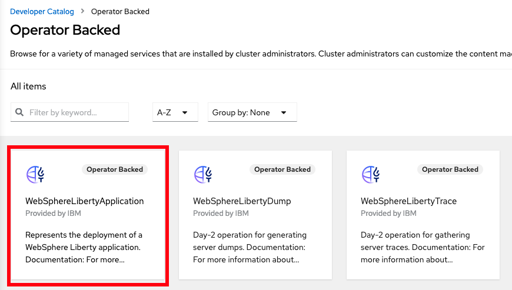 - Click
Create:
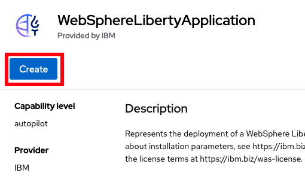 - Scroll to the top and set the fields:
Name=libertydiagApplication Image=quay.io/ibm/libertydiag- Click on
Licenseand checkaccept - Change the
Exposetoggle to enabled
- Expand
Probesand click onReadiness Probe:
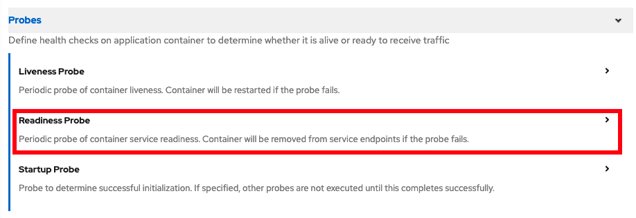 - Set
initialDelaySecondsto1and setfailureThresholdto1:
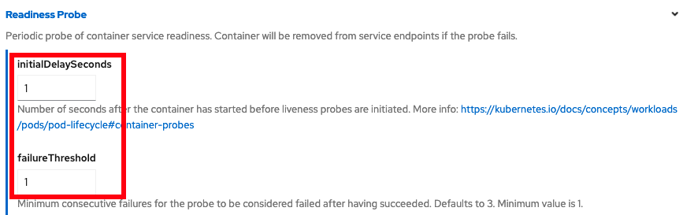 - Scroll to the bottom and click
Create - You will be taken back to the
Topologyview and you'll see the new application. While the application is initializing, there will be a light blue circle around it:
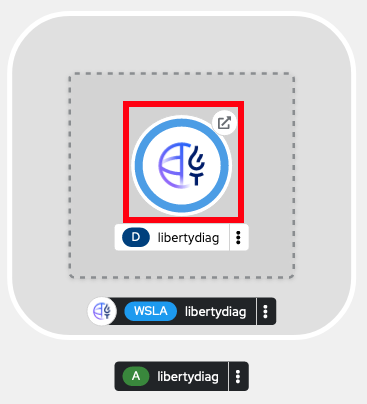 - Wait until the circle turns into a dark blue, signifying the application is ready. This may take up to 2 minutes or more depending on available cluster resources and namespace limits:
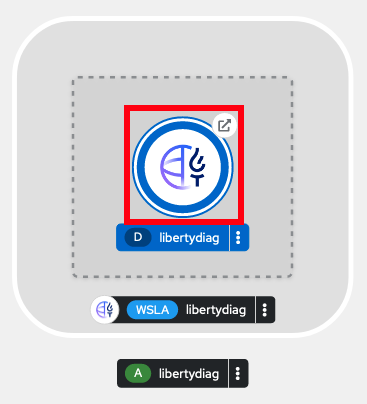 - Click the
Open URLbutton on the resultingTopologyview to open the application (and accept the certificate warning)
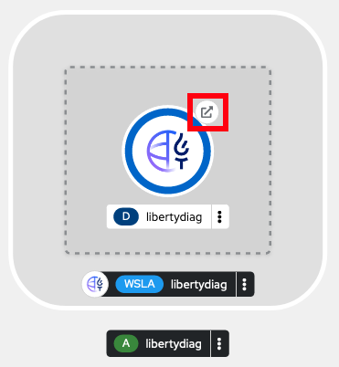 - You should see the
libertydiagapplication home page:
- Go back to the previous page in the lab and continue to the next step of the lab
Install using a basic Kubernetes Deployment
Using the command line
- If you haven't already, download the
ocexecutable and log into your OpenShift console through the command line -
If you have been provided a namespace that you should use, then set your current namespace/project by replacing
$NAMESPACEin the following command with the namespace/project you were provided:oc config set-context --current --namespace $NAMESPACE -
Create a file name
libertydiag.yamlin the same directory where you are running theoccommands:apiVersion: apps/v1 kind: Deployment metadata: name: libertydiag labels: app: libertydiag spec: selector: matchLabels: app: libertydiag template: metadata: labels: app: libertydiag spec: containers: - name: libertydiag image: quay.io/ibm/libertydiag imagePullPolicy: Always readinessProbe: httpGet: path: /health/ready port: 9080 scheme: HTTP initialDelaySeconds: 1 periodSeconds: 10 timeoutSeconds: 3 failureThreshold: 1 -
Create the deployment (a warning about
would violate PodSecurityis expected in development clusters):oc apply -f libertydiag.yaml -
Run the following command which will wait until the deployment is ready. This may take up to 2 minutes or more depending on available cluster resources and namespace limits:
oc wait deployment libertydiag --for condition=available --timeout=5m -
Create a service for the application to create a load balancer to the deployment:
oc expose deployment libertydiag --port=80 --target-port=9080 -
Create a route for the application to expose the service externally:
oc create route edge --service=libertydiag -
List the route's URL:
oc get route libertydiag "--output=jsonpath={'https://'}{.spec.host}{'/\n'}" -
Open the URL in your browser and accept the certificate warning
- You should see the
libertydiagapplication home page:
- Go back to the previous page in the lab and continue to the next step of the lab
Using the browser
- Access your OpenShift web console at
https://console-openshift-console.$CLUSTER/. Replace$CLUSTERwith your OpenShift cluster domain. - Ensure the perspective is set to
Developerin the top left:
- If you have been provided a namespace that you should use, then set your current namespace/project to what you were provided. For example:
- Click
Container Imageson the+Addpage:
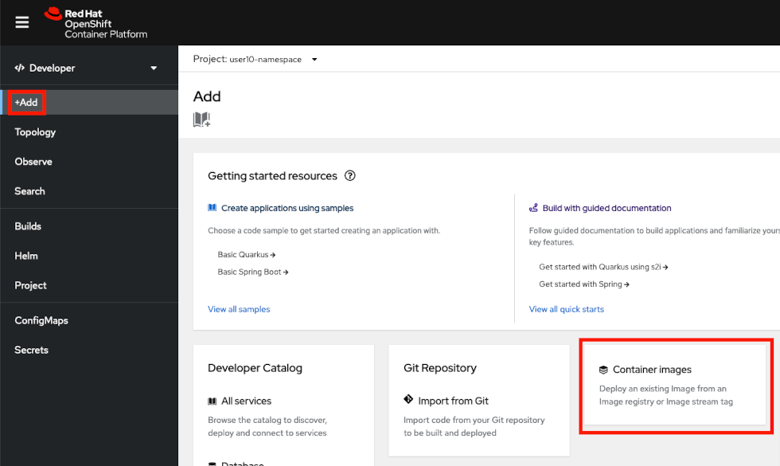 - Set
Image name from external registrytoquay.io/ibm/libertydiag - Scroll down to the bottom and click on
Health checks:
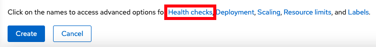 - Click on
Add Readiness probe:
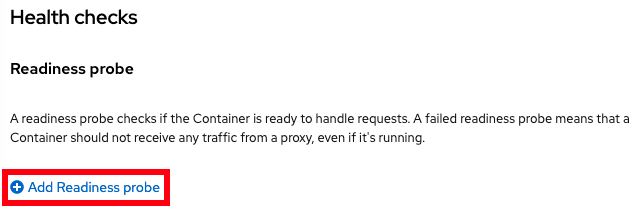 - Fill in the following information (in particular,
Path=/health/readyandPort=9080) and click the small checkbox in the bottom right:
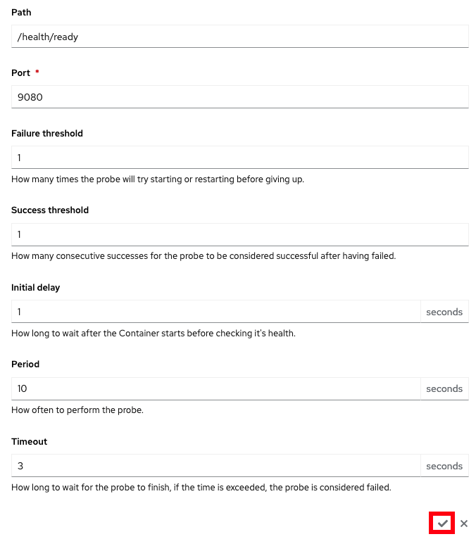 - You should see
Readiness probe added. Click on theCreatebutton:
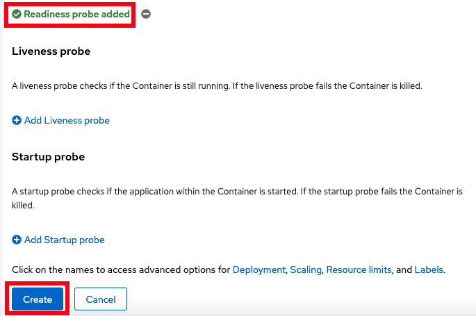 - You will be taken back to the
Topologyview and you'll see the new application. While the application is initializing, there will be a light blue circle around it:
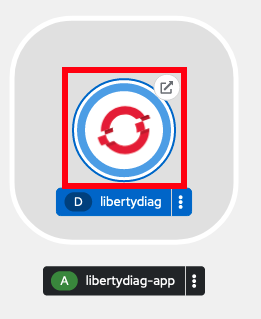 - Wait until the circle turns into a dark blue, signifying the application is ready. This may take up to 2 minutes or more depending on available cluster resources and namespace limits:
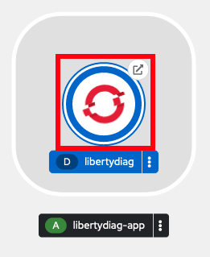 - Click the
Open URLbutton to open the application (and accept the certificate warning):
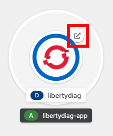 - You should see the
libertydiagapplication home page:
- Go back to the previous page in the lab and continue to the next step of the lab